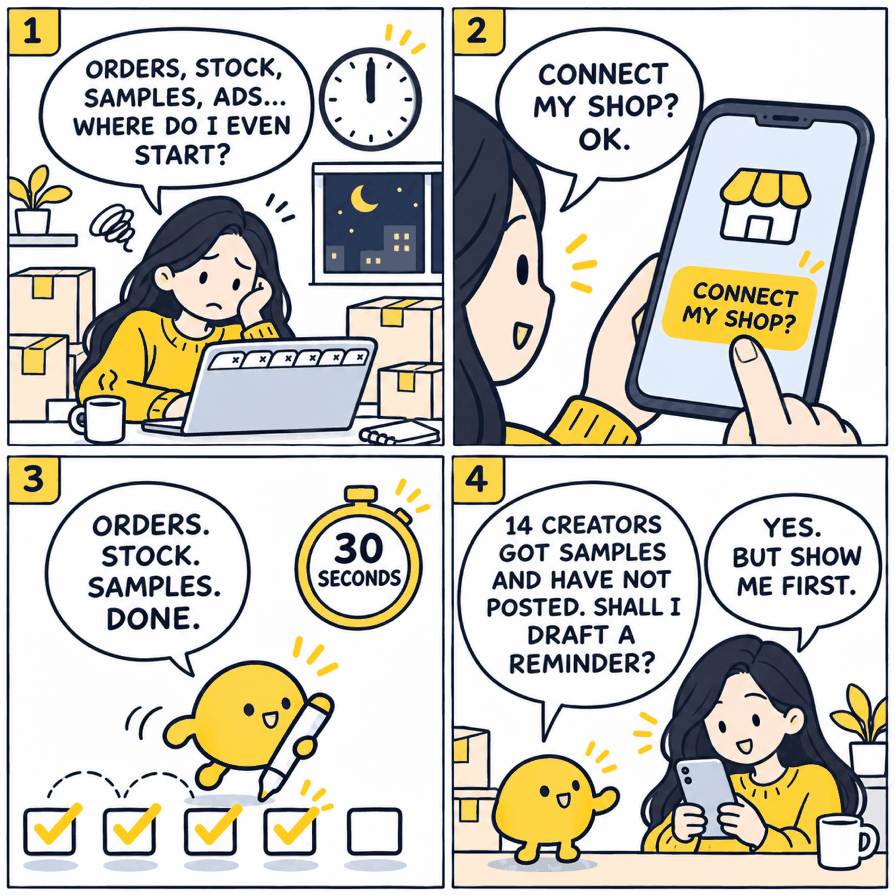

Back to all work
Shop check
A seller connects their TikTok Shop. About thirty seconds later they get one page: five numbers, the top problem, and what each AI helper found.
A rebuild, with made-up shops, of a product I built at work.
Try it. Pick a shop, then tap Connect.

What to look for
- Missing is not zero. Pick Mossback Tea. The ad account is not connected, so the report says "Not counted yet". It does not say 0.
- The page fills in by itself. On Mossback Tea, customer chats are still being read when the report opens. Watch that row change.
- A real zero is calm. Pick Pocket Trail. Zeros read "Nothing to fix here" in grey.
- The summary cannot make up a number. The writer of the top line puts in blanks, and code fills each blank from the shop's data. A line with a typed number is thrown away.
- Nothing is sent without a yes. Tap any "Have …" button. The helper drafts, and you confirm first.